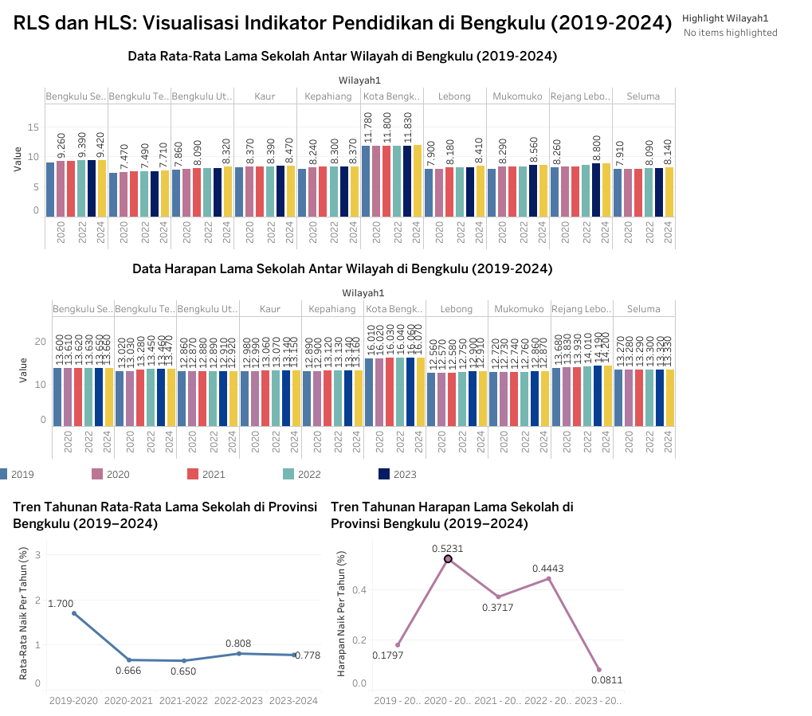

Data Cleaning - Scraping Data Google Review Universitas Bengkulu
Dataset mentah ini berjumlah 372 data yang discraping di Google Review Uniiversitas Bengkulu.
View Report
Outlier Detection on the Golf Dataset
This process involves identifying and removing extreme values (outliers) from the golf dataset.
View Report
Fraud Detection in Financial Transactions Using Random Forest and SMOTE
Training the Random Forest model, including the application of regularization parameters such as
limiting tree depth and setting the minimum number of samples per split, to reduce the risk of
overfitting — especially after the oversampling process using SMOTE.
View Report
Deep Learning for Mental Health? LSTM-Enhanced Sentiment Detection
Sentiment Analysis on Text Data Using an LSTM Model Achieving 85% Accuracy.
View Report
RLS & HLS: Visualization of Education Indicators in Bengkulu (2019–2024)

This dashboard presents a visualization of the development of two key education indicators in
Bengkulu Province, namely the Mean Years of Schooling (MYS) and the Expected Years of Schooling
(EYS), over the period from 2019 to 2024,
Using Tableau
.